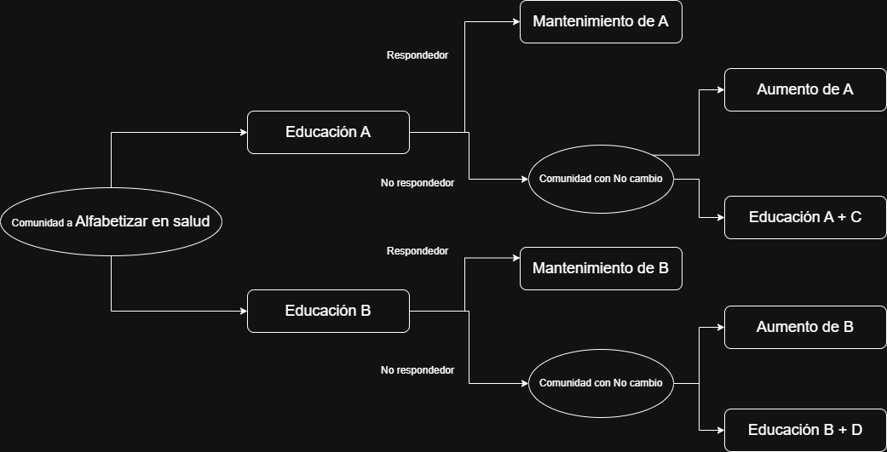

6 Creaciones de intervenciones en educación para la salud
En cuanto a la metodología utilizada para la creación de intervenciones en materia de educación para la salud, las acciones específicas a diseñar se personalizarán en función del objetivo de la intervención en educación para la salud en concreto. Es decir, no se realizarán las mismas acciones para una intervención que busque la recogida de información de una población, aquellas que busquen establecer relaciones o aquellas dirigidas al aprendizaje.
En materia de intervenciones en educación debemos hacer mención a la conocida como “ciencia de la implementación”. Si bien, el enfoque de la ciencia de la implementación es investigar técnicas para lograr implementar con éxito nuevos procedimientos generalmente en organismo, sus metodologías pueden ser interesantes a la hora de planificar una intervención en educación para la salud.
6.1 La ciencia de la implementación
Dentro de la ciencia de la implementación podemos encontrar distintas aproximaciones. En esta asignatura abordaremos 3 de ellas:
Se trata de un marco teórico que incluye una consolidación de múltiples teorías de la implementación diseñada especificamente para identificar barreras y facilitadores en la comunidad para llevar a cabo una intervención.
Sus herramientas pueden ser encontradas aquí: CFIR Guide
Metodología de investigación diseñada para la identificación de las acciones necesarias para garantizar la implementación de una intervención específica.
Podemos encontrar mas información aquí
Modelo teórico de implementación que trata de identificar las características necesarias para garantizar un cambio en el individuo o comunidad.
Podemos encontrar mas información aquí
6.2 Técnicas básicas de aprendizaje
En cuanto a las técnicas básicas de aprendizaje se debe mencionar como, en la actualidad el educador en salud (el sanitario encargado de llevar a cabo al intervención de educación en salud) posee un rol de facilitar, ayuda y apoyo al individuo o comunidad. Es decir, la función principal del educador es garantizar el aprendizaje del individuo o de la comunidad pero relgando sus acciones a ayudarle y otorgando al individuo la capacidad de aprnder solo.
Dentro de las técnicas básicas de aprendizaje podemos clasificarlas en función del objetivo que queramos conseguir:
Cuando queremos conocer la situación de un individuo o de una comunidad podemos realizar sesiones grupales o individuales donde a través de la escucha activa y la tormenta de ideas recabemos información acerca de una hecho.
Cuando queremos conocer reorganizar la información de la que dispone un individuo o grupo podemos realizar sesiones de debates dirigidos analizando la información disponible
Cuando queremos fomentar nuevas habilidades en un individuo o comunidad podemos realizar técnicas de demostración o simulaciones operativas (rol-playing).
Cuando queremos realizar una captación de una individuo o comunidad podemos realizar una sesión de corta duración entregando material informativo llamativo
Gracias a las distintas técnicas realizadas, el individuo o la comunidad deberá lograr un aprendizaje significativo definido como:
6.3 Estrategias de acciones
Mencionaremos de forma breve algunas técnicas utilizadas en el diseño de experimentos de cambio de conducta como es el diseño SMART:
Los diseños SMART son un tipo de diseño de investigación donde los grupos son aleatorizados a las intervenciones propuestas y, en función de si intervención asignada no está logrando su objetivo se les asigna una nueva intervención sumativa. Este tipo de intervenciones logra optimizar las intervenciones necesarias para lograr los cambios en salud.

Podemos encontrar un ejemplo aquí
7 Decálogo de un buen documento de intervención
En orden de generar una buena intervención en eduación para la salud, ésta debe estar correctamente documentada. Es por ello, que deberá incluir los siguientes apartados:
Análisis de la situación:
- Se debe especificar cual es el objeto de la intervención (individuo o comunidad).
- Se debe describir el entorno del objeto de la intervención.
- Se deben listar las barreras y facilitadores existentes.
Concretar el objetivo:
- Se debe responder a las necesidades detectadas en el análisis de la situación.
- Se debe abordar tanto el área cognitiva, emocional y habilidades del objeto de la intervención.
- Se deben listar los procesos de aprendizaje a conseguir.
Metodología:
- Se debe indicar la metodología de aprendizaje utilizada para aobjetivo.
- Se debe indicar los intervalos de tiempo de la metodología.
- Se deben indicar los recursos necesarios para realizarla.
Evaluación:
- Se debe evaluar la intervención local realizada.
- Se debe evaluar el proceso utilizado.
- Se deben evaluar los resultados del aprendizaje.